Fundamentos de Analítica y
Visualización de Datos
Rolando Mirabal, Desarrollador de Insights Senior en Viva
06/12/2022

¿qué es un dataset?
Alguna vez referido como fuente de datos o base de datos en el contexto de Tableau contiene los datos usados para construir visualizaciones.
Todas las visualizaciones tienen como fundamento un dataset que proporciona los datos.
Hojas de cálculo: Excel, Google sheet, .csv
Relational Database: MySQL, Postgres
Cloud data: S3 amazon, azure
Otros tipos de conexión:
archivos espaciales: .kml, .shp
archivos estadísticos

Evaluar los campos
Los tipos de datos pueden ser cambiados por el usuario y todos los cambios son mapeados por tableau en un archivo .tds (tableau data source)
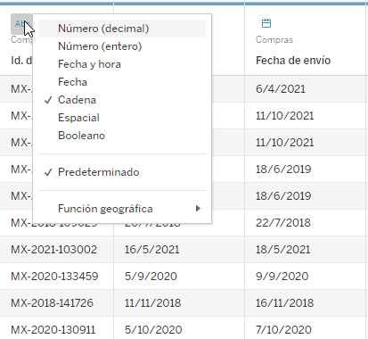

¿por qué importa?
la granularidad se refiere al nivel de detalle para una pieza de datos. Cuando los datos sea menos granulares, los describiremos como agregaciones o datos agregados.
Important
el nivel de granularidad o agregación en una fila o gráfico afectan las preguntas que podemos preguntar a los datos y los descubrimientos que podemos hacer.
- granularidad por incidente en la tabla:

- Agregado en una gráfica:
- 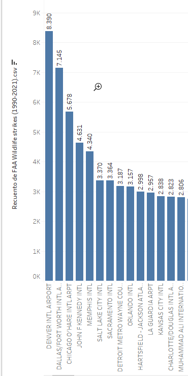

Tip
En una gráfica puedes hacer click derecho y ver datos para ver la granularidad mínima
Mostrarme

Atributos preatencionales en tableau
Largo:
Cuantitativo:
- Excelente
Cualitativo:
- Pobre
Ancho
Cuantitativo: Limitado
Cualitativo: Pobre
Posición
Cuantitativo: Excelente
Cualitativo: Pobre
Tono de Color
Cuantitativo: Pobre
Cualitativo: Excelente
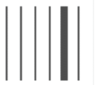

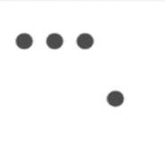

Tipos de gráficos y sus usos
Tip
Los gráficos son más efectivos y legibles cuando se combinan con los datos y el propósito correctos.
| 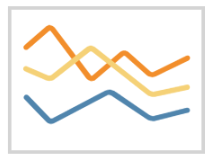 |  |
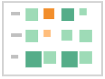 |  |
| 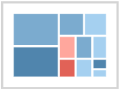 |  |
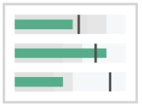 |  |
| 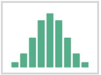 | 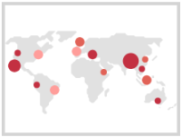 | 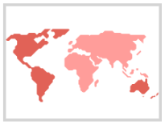 | 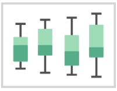 |
Gráfico de barras - comparando categorías de datos
Usado para comparar datos entre categorías. Al hacerlo bien son fácil de leer e interpretar.
el largo de las barras indican que categoría tiene el valor más alto
Los ejes del gráfico de barras indican que respresenta el valor


Gráfico de líneas - ver datos a través del tiempo
Son muy útiles para ver cambios en los datos en el tiempo.
¿cuándo las tendencias suben y bajan?
¿alguno de estos datos te sirven para identificar tendencias futuras?
toma atención a los ejes. ¿cuál es el rango típico del rango de valores? ¿son los intervalos uniformes?
¿cuál es la linea de tiempo: diaria, mensual, anual? ¿muestra el detalle adecuado para analizar?

Gráfico de dispersión - ver relaciones de datos y valores atípicos
Útiles cuando se quiere ver las relaciones entre 2 medidas o valores cuantitativos. ¿Hay alguna correlación? ¿hasta que punto?


Warning
“la correlación no significa causalidad”
Note
Los valores atípicos son excepciones raras que se pueden obviar, o están indicando que debemos revisar algo más de cerca. ¿O son simplimente errores?
Si consideramos el diagrama de dispersión:
¿para el usuario final estará interesado en si una variable incrementa o decrementa con los cambios en otra variable?
¿será útil ver si el cambio en una variable afecta a otra?, y que efecto es ese?
¿cuán cerca le sigue un cambio de una variable a otra?
Ejercicio 3era Parte - Preparando tus datos
A continuación se detalla la tercera parte: cómo preparar sus datos.
En Tableau realice las siguientes acciones para preparar datos y saque capturas.
- Abra tableau y conectese a documento excel provisto en classroom.
- Divida el campo de ubicación.
- Cambie el nombre de Split 1 a “Lat”.
- Cambie el nombre de Split 2 a “Long”.
- Convierta los datos de latitud y longitud en un tipo de datos espaciales.
- Confirme que la fecha se muestra en un formato de fecha discreto.
- Renombrar el tipo de datos de “Name” (Nombre) a “City” (Ciudad).